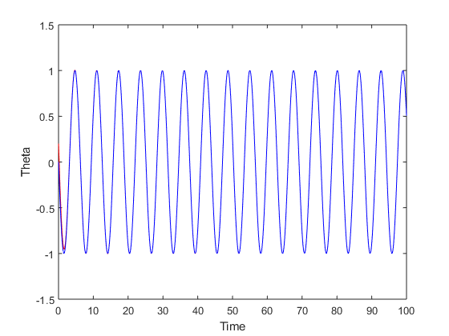
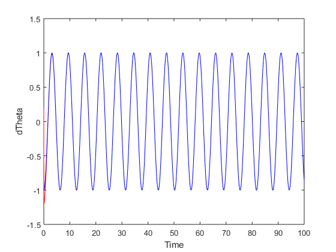
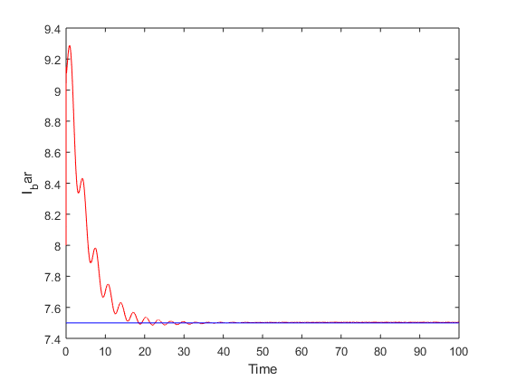
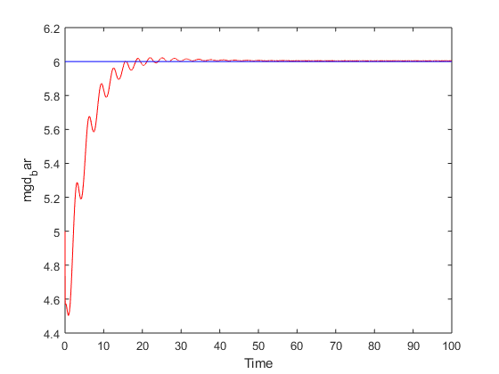
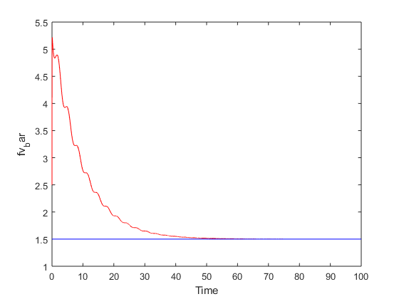
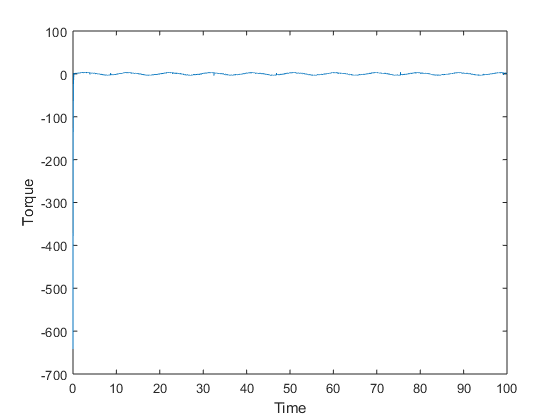

Assignment 6
By- Aishwary Jagetia
Contents
Adaptive control design for one-link planar arm.
clc clear all; close all; % Initial condition global I mgd fv % the nominal model parameter: I = 7.5; mgd = 6.0; fv = 1.5; % parameters in the paper. Ii = 8.0; mgdi = 5.0; fvi = 2.5; % parameters in the paper. x0=[0.2,0.2,8.0,5.0,2.5]; %[q,dq,Ii,mgdi,fvi] tf = 100.0; global torque torque=[]; options = odeset('RelTol',1e-4,'AbsTol',[1e-4, 1e-4, 1e-4, 1e-4, 1e-4]);
IMPLEMENTING THE CONTROLLER AND PLOTTING THE RESULTS
[T,X] = ode45(@(t,x)planarArmODEAdaptive(t,x),[0 tf],x0,options); figure('Name','Theta under Adaptive Control'); plot(T, X(:,1),'r-'); hold on plot(T, -sin(T),'b-'); ylabel('Theta') xlabel('Time') figure('Name','dTheta under Adaptive Control'); plot(T, X(:,2),'r-'); hold on plot(T, -cos(T),'b-'); ylabel('dTheta') xlabel('Time') figure('Name','I_bar under Adaptive Control'); plot(T, X(:,3),'r-'); hold on plot(T, I*ones(size(T,1),1),'b-'); ylabel('I_bar') xlabel('Time') figure('Name','mgd_bar under Adaptive Control'); plot(T, X(:,4),'r-'); hold on plot(T, mgd*ones(size(T,1),1),'b-'); ylabel('mgd_bar') xlabel('Time') figure('Name','fv_bar under Adaptive Control'); plot(T, X(:,5),'r-'); hold on plot(T, fv*ones(size(T,1),1),'b-'); ylabel('fv_bar') xlabel('Time') figure('Name','Adaptive Control'); plot(T, torque(1,1:size(T,1)),'-'); ylabel('Torque') xlabel('Time') hold off torque=[]; % IMPLEMENTING THE CONTROLLER function [dx ] = planarArmODEAdaptive(t,x) theta_d=[-sin(t)]; % [x1d] Desired trajectory dtheta_d=[-cos(t)]; % [x1d_dot] ddtheta_d=[sin(t)]; % [x1d_ddot] theta=x(1,1); % [x1]=[x(1)] dtheta=x(2,1); % [x1_dot]=[x(2)] global I mgd fv Mbar Cbar Nbar M = I; C = fv; N = mgd*sin(x(1)); invM = inv(M); invMC= inv(M)*C; invMN= inv(M)*N; Mbar = x(3); Cbar = x(5); Nbar = x(4)*sin(x(1)); tau = Controler(theta_d,dtheta_d,ddtheta_d,theta,dtheta); global torque torque = [torque, tau]; global a v r H = 0.01*eye(3); dx=zeros(5,1); dx(1) = x(2); dx(2) = -invMC* x(2) -invMN +invM*tau; % because ddot theta = -M^{-1}(C \dot Theta) + M^{-1} tau Y = [a, sin(x(1)), v]; dx(3:5) = -inv(H)*transpose(Y)*r; end % Adaptive Control Law function tau = Controler(theta_d,dtheta_d,ddtheta_d,theta,dtheta) P_e = theta - theta_d; V_e = dtheta - dtheta_d; global r a v Kv= 450*eye(1); L = 1*eye(1); a = ddtheta_d - L*V_e; v = dtheta_d - L*P_e; r = V_e + L*P_e; global Mbar Cbar Nbar tau = Mbar*a + Cbar*v + Nbar - Kv*r; end     